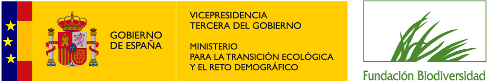
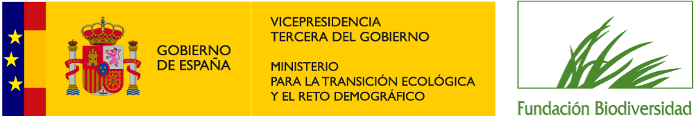
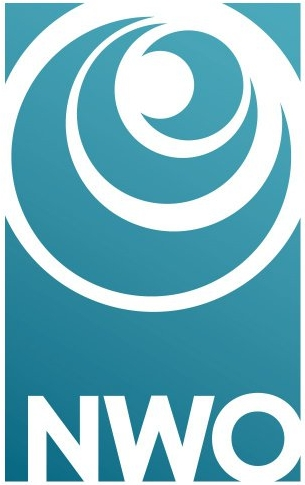
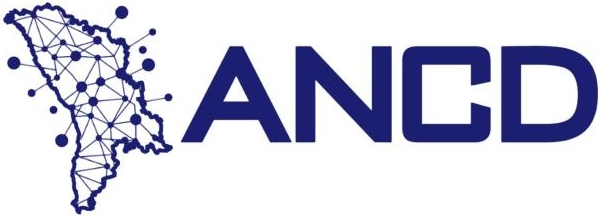

Integrating Biodiversity Conservation into Renewable Energy Transition
BRET (2026–2029) develops evidence-based strategies for biodiversity-positive renewable energy transition. It addresses conflicts between renewable energy expansion (wind, solar, hydro, bioenergy) and biodiversity conservation by combining ecological science, policy analysis, and stakeholder engagement.
Objectives:
- Integrate biodiversity baselines into renewable energy site planning
- Create ecological impact assessment frameworks (using DPSIR)
- Develop biodiversity valuation methods combining ecological, economic, and socio-cultural perspectives
- Translate findings into actionable policies and guidelines for developers
Acknowledgement
This research was funded by Biodiversa+,
the European Biodiversity Partnership, in the context of the BRET project under
the 2024-2025 BiodivTransform joint
call. It was co-funded by the European Commission
(GA No. 101052342) and the following funding organizations: Formas
Sweden, AEI Spain & FB Spain, NWO Netherlands, NARD Moldova, and MVZI Slovenia.

 


